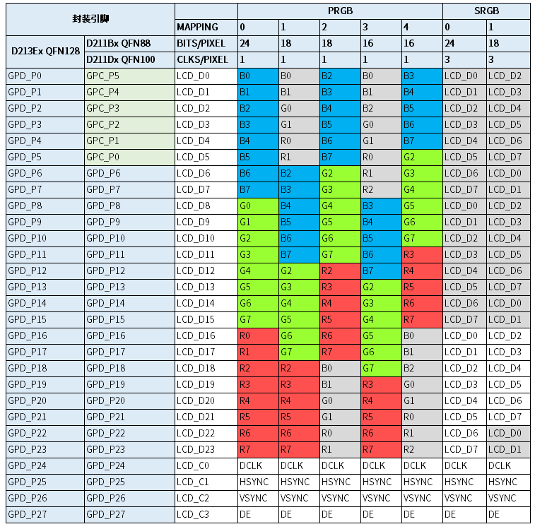

RGB
16 May 2025
Read time: 8 minute(s)
RGB 屏幕（无需初始化）
对于无需初始化的 RGB 屏幕，使用 ``simple-panel`` 驱动，在 menuconfig 界面中配置屏幕规格书中的时序和规格参数即可。具体流程如下所示：
- 在 Luban-Lite 根目录下执行 me，进入 menuconfig 的功能配置界面。
- 选择显示接口 Display RGB
interface：
Board options ---> [*] Using Display Engine (DE) Display Parameter ---> select Display interface (Display RGB interface) ---> RGB interface options ---> - 配置 RGB interface options
中的接口参数：
Board options ---> Graphics Support ---> Graphics support [*] Display Support select Display interface (Display RGB interface) ---> RGB interface options ---> rgb mode (PRGB) ---> interface format (PRGB 16 BIT LD) ---> data order (RGB) ---> clock phase select(0 degree) --->注： 显示接口参数详解可参考 Luban-Lite SDK 指南 Display 使用指南章节 - 选择 simple-panel
驱动：
Board options ---> [*] Using Display Engine (DE) Display Parameter ---> Display Panels ---> ArtInChip Panel Drivers (ArtInChip simple panel) ---> - 配置 simple-panel
的时序参数：
Board options ---> [*] Using Display Engine (DE) Display Parameter ---> Display Panels ---> ArtInChip Panel Drivers (ArtInChip simple panel) ---> display timing of simple panel ---> (52) pixelclock in MHZ (1024) hactive (600) vactive (160) hback-porch (160) hfront-porch (20) hsync-len (12) vback-porch (20) vfront-porch (2) vsync-len - 配置引脚功能。在 pinmux.c 文件中添加 LCD 的功能（功能 2）引脚。
以
demo128-nand工程为例，在配置文件target/d21x/demo128-nand/pinmux.c中添加所需引脚。例如，对于 D213 芯片型号， PRGB 16 BIT LD 模式引脚配置如下所示：#ifdef AIC_PRGB_24BIT // rgb mode = PRGB, interface format = PRGB 16 BIT LD {2, PIN_PULL_DIS, 3, "PD.9"}, {2, PIN_PULL_DIS, 3, "PD.10"}, {2, PIN_PULL_DIS, 3, "PD.11"}, {2, PIN_PULL_DIS, 3, "PD.12"}, {2, PIN_PULL_DIS, 3, "PD.13"}, {2, PIN_PULL_DIS, 3, "PD.14"}, {2, PIN_PULL_DIS, 3, "PD.15"}, {2, PIN_PULL_DIS, 3, "PD.16"}, {2, PIN_PULL_DIS, 3, "PD.17"}, {2, PIN_PULL_DIS, 3, "PD.18"}, {2, PIN_PULL_DIS, 3, "PD.19"}, {2, PIN_PULL_DIS, 3, "PD.20"}, {2, PIN_PULL_DIS, 3, "PD.21"}, {2, PIN_PULL_DIS, 3, "PD.22"}, {2, PIN_PULL_DIS, 3, "PD.23"}, {2, PIN_PULL_DIS, 3, "PD.24"}, {2, PIN_PULL_DIS, 3, "PD.25"}, {2, PIN_PULL_DIS, 3, "PD.26"}, {2, PIN_PULL_DIS, 3, "PD.27"}, #endif
RGB 显示接口引脚取决于芯片型号，rgb mode 和 interface format。以 D213 芯片型号为例，其定义图如下：
RGB 屏幕（SPI 初始化）
对于需要通过 SPI 发送初始化命令的 RGB 屏幕，需根据屏厂提供的资料，开发一款专用的驱动。开发步骤如下：
- 创建屏驱动
- 复制模板文件 ``panel_rgb_st7701s.c``
- 将新文件重命名为 ``panel_rgb_xxx.c`` (xxx 为屏驱 IC 型号)
- 注册新驱动文件
- 修改 bsp\artinchip\drv\display\panel\Kconfig
文件，添加下列配置项，使新驱动在 menuconfig
界面可见：
config AIC_PANEL_RGB_XXX bool "ArtInChip RGB XXX panel" depends on AIC_DISP_RGB select AIC_PANEL_SPI_EMULATION - 修改 bsp/artinchip/SConscript
文件，添加编译规则：
if GetDepend('AIC_PANEL_RGB_XXX'): src += Glob('drv/display/panel/panel_rgb_xxx.c')
- 修改 bsp\artinchip\drv\display\panel\Kconfig
文件，添加下列配置项，使新驱动在 menuconfig
界面可见：
- 注册新 struct aic_panel 结构体。
- 修改 panel_rgb_xxx.c 的 struct aic_panel 命名，重命名格式为 ``rgb_xxx``。
- 在 panel_com.h` 中 extern struct aic_panel
rgb_xxx
// panel_com.h extern struct aic_panel rgb_xxx; - 在 panel_com.h 中 extern struct aic_panel
rgb_xxx
// panel_com.c static struct aic_panel *panels[] = { ... #ifdef AIC_PANEL_RGB_XXX &rgb_xxx, #endif };
- 设置屏幕时序和接口参数。
- 修改 struct display_timing 结构体，根据 LCD
屏幕规格书修改时序参数：
static struct display_timing xxx_timing = { .pixelclock = 42000000, .hactive = 400, .hfront_porch = 100, .hback_porch = 100, .hsync_len = 10, .vactive = 960, .vfront_porch = 80, .vback_porch = 100, .vsync_len = 20, }; - 修改 struct panel_rgb 结构体，根据 LCD 屏幕规格书和 PCB
连线修改显示接口参数：
static struct panel_rgb rgb = { .mode = PRGB, .format = PRGB_24BIT, .clock_phase = DEGREE_0, .data_order = RGB, .data_mirror = 0, }; -
注： 显示接口参数详解可参考Display 使用指南。
- 修改 struct display_timing 结构体，根据 LCD
屏幕规格书修改时序参数：
- 添加初始化操作
- 重新实现 ``struct aic_panel_funcs`` 结构体中的 `prepare` 或者 `enable`
接口，发送初始化命令
static struct aic_panel_funcs st7701s_funcs = { .disable = panel_default_disable, .unprepare = panel_default_unprepare, .prepare = panel_default_prepare, .enable = panel_enable, .register_callback = panel_register_callback, }; - 根据板卡原理图添加 ``reset`` 或 ``power`` 控制引脚的逻辑
如果不需要软件控制 reset 引脚，该步骤可省略
#define RESET_PIN "PE.1" static struct gpio_desc reset_gpio; static struct gpio_desc sleep_gpio; static void panel_gpio_init(void) { panel_get_gpio(&reset_gpio, RESET_PIN); panel_get_gpio(&sleep_gpio, SLEEP_PIN); panel_gpio_set_value(&sleep_gpio, 1); aic_delay_ms(2); panel_gpio_set_value(&reset_gpio, 0); aic_delay_ms(20); panel_gpio_set_value(&reset_gpio, 1); aic_delay_ms(120); }
- 重新实现 ``struct aic_panel_funcs`` 结构体中的 `prepare` 或者 `enable`
接口，发送初始化命令
- 配置 SPI 引脚
- 根据板卡原理图指定 SPI
引脚
#define CS "PE.3" #define SCL "PA.8" #define SDI "PA.9"
- 在 SPI
发送前初始化相关引脚
static int panel_enable(struct aic_panel *panel) { panel_spi_device_emulation(CS, SDI, SCL); ... // 发送初始化命令 }
- 根据板卡原理图指定 SPI
引脚
- 配置引脚功能
在 pinmux.c 文件中添加引脚功能，包括 LCD 引脚，SPI 引脚 和 reset 控制引脚
以
demo128-nand工程为例，在target/d21x/demo128-nand/pinmux.c文件中添加所需引脚：- 按板卡原理图添加控制引脚和 SPI 引脚，设置功能
1
#ifdef AIC_PANEL_RGB_XXX ... {1, PIN_PULL_DIS, 3, "PE.3"}, // CS {1, PIN_PULL_DIS, 3, "PA.8"}, // SCL {1, PIN_PULL_DIS, 3, "PA.9"}, // SDA {1, PIN_PULL_DIS, 3, "PE.1"}, // RESET_PIN #endif - 根据芯片型号和显示接口参数，添加 LCD 引脚，配置功能
2
#ifdef AIC_PANEL_RGB_XXX // D213, mode = PRGB, format = PRGB_24BIT {2, PIN_PULL_DIS, 3, "PD.0"}, {2, PIN_PULL_DIS, 3, "PD.1"}, {2, PIN_PULL_DIS, 3, "PD.2"}, {2, PIN_PULL_DIS, 3, "PD.3"}, {2, PIN_PULL_DIS, 3, "PD.4"}, {2, PIN_PULL_DIS, 3, "PD.5"}, {2, PIN_PULL_DIS, 3, "PD.6"}, {2, PIN_PULL_DIS, 3, "PD.7"}, {2, PIN_PULL_DIS, 3, "PD.8"}, {2, PIN_PULL_DIS, 3, "PD.9"}, {2, PIN_PULL_DIS, 3, "PD.10"}, {2, PIN_PULL_DIS, 3, "PD.11"}, {2, PIN_PULL_DIS, 3, "PD.12"}, {2, PIN_PULL_DIS, 3, "PD.13"}, {2, PIN_PULL_DIS, 3, "PD.14"}, {2, PIN_PULL_DIS, 3, "PD.15"}, {2, PIN_PULL_DIS, 3, "PD.16"}, {2, PIN_PULL_DIS, 3, "PD.17"}, {2, PIN_PULL_DIS, 3, "PD.18"}, {2, PIN_PULL_DIS, 3, "PD.19"}, {2, PIN_PULL_DIS, 3, "PD.20"}, {2, PIN_PULL_DIS, 3, "PD.21"}, {2, PIN_PULL_DIS, 3, "PD.22"}, {2, PIN_PULL_DIS, 3, "PD.23"}, {2, PIN_PULL_DIS, 3, "PD.24"}, {2, PIN_PULL_DIS, 3, "PD.25"}, {2, PIN_PULL_DIS, 3, "PD.26"}, {2, PIN_PULL_DIS, 3, "PD.27"}, #endif - RGB 显示接口引脚定义图如下：
- 按板卡原理图添加控制引脚和 SPI 引脚，设置功能
1
- 使能新建的 panel 驱动
在 Luban-Lite 根目录下执行 me，进入 menuconfig 的功能配置界面。
- 选择显示接口 Display RGB
interface：
Board options ---> [*] Using Display Engine (DE) Display Parameter ---> select Display interface (Display RGB interface) ---> RGB interface options ---> - 选择新建的 ArtInChip RGB XXX panel
驱动：
Board options ---> [*] Using Display Engine (DE) Display Parameter ---> Display Panels ---> ArtInChip Panel Drivers (ArtInChip RGB XXX panel) --->
- 选择显示接口 Display RGB
interface：